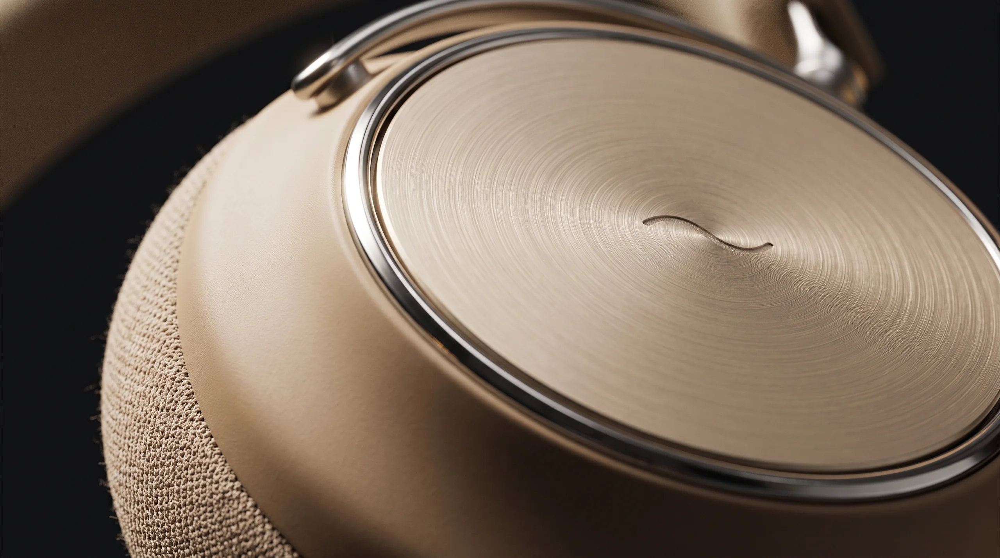
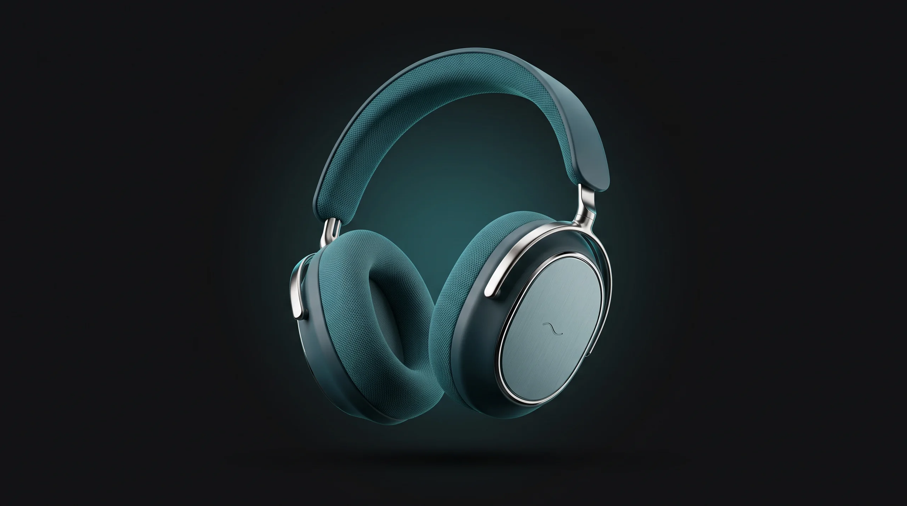

Battery with cancelling on

01 Craft
Finished like a watch, worn like a sweater.
Each cap is cut from one block of aluminum, brushed by hand in rings and sealed in a soft anodized tone. The cushions are knit, not glued.
0.4 mmPolished chrome seam
1,200Brushed rings per cap
3D knitBreathable cushion cover
02 Inside
Built in layers, like the sea floor.
Nine parts and one quiet machine. Keep scrolling and it comes apart, piece by piece. Drag to turn it.
- 01 Aluminum cap
- 02 30-hour battery
- 03 40 mm driver
- 04 Memory foam
Fig. 02 — Exploded view, right cup
Scale 1:1.6 · Units mm
03 Silence
Noise rolls in. Then it doesn’t.
0dB
Six microphones listen 48,000 times a second and answer every wave with its mirror image.

04 Colors
Three tides.
Every finish is named after a moment on the Bay of All Saints.
Sand
05 Specs
Small numbers, big quiet.
Charge for three hours of play
Lighter than a paperback
Peak noise reduction
Connected at the same time
Bluetooth with lossless codec